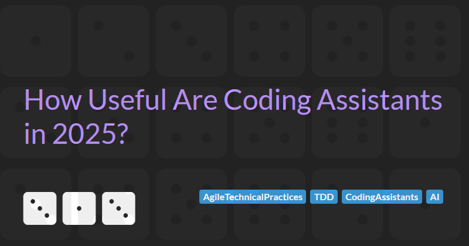

How Useful Are Coding Assistants in 2025?
In recent years, AI-powered coding assistants have been marketed as transformative tools. They claim to have evolved from basic autocomplete features to sophisticated pair programmers capable of generating, refactoring, and explaining code. With advancements in natural language processing and machine learning, there has been an explosion of tools like GitHub Copilot, Amazon Q Developer, Codium's Windsurf Editor, Tabnine AI Code Assistant, Cursor, and many more that are all hoping to convince developers that they can enhance the way we write and maintain software.
As we enter 2025, a crucial question remains:
Do these assistants live up to the claims, or are they just an overpromised hype?
In this article I'm going to try and answer this question by examining the claimed productivity benefits of coding assistants. Specifically, I will illustrate my views of these claims with examples from my experience using GitHub Copilot. Although the practical examples will be from Copilot, all of the conclusions are applicable to all types of coding assistants.
I will not cover security or data privacy concerns of using coding assistant tools. If you decide you want to experiment with this type of tooling within your organisation then I suggest you use your own judgement to assess these wider ranging concerns.
What Can Coding Assistants Do?
Coding assistants offer a wide range of capabilities. Broadly the common features offered by most assistants fit into the following categories:
- Generate code to reduce repetitive coding tasks.
- Generate tests to reduce repetitive testing tasks.
- Generate documentation to add comments that explain how code works.
- Suggest code completions for faster and more accurate typing.
- Explain code to help understand existing code.
- Explain errors to help fix unexpected results and offering solutions.
My Context
In order to provide some context on my opinions I want to be open about my development preferences and my experience with coding assistants and other similar AI tools.
I consider myself to be a relatively experienced developer. I worked with a number of different languages over my 30 year career and still write code everyday. I prefer to use Test Driven Development as I truly believe that this technique encourages the creation of cleaner, modular, more maintainable code.
I used Copilot when it was in its initial technical preview in 2021 and have recently become reacquainted with the technology as part of a project I am currently working on. I would not say I am an expert, nor would I say I'm a beginner with using such tools.
I've use various other AI tools outside of development and have a good understanding of their inner working and how to get the best out of them by tailoring my prompts.
In this evaluation of coding assistants, I will naturally view the value of the tool from my experience and preferred way of working. Your context may be different and, if it is, I encourage you to perform your own evaluation.
Where I think it might be valuable, I will also consider the value of these tools from the perspective of a more junior developers starting out in the software industry or trying to learn a new technology / language.
An Experiment With Copilot
Getting hands-on with Copilot is the only way to truly understand the hype/value of this kind of tool. To evaluate Copilot we will use the official Microsoft AI for developers documentation.
I've been using Python a lot recently as part of my series on Data Science For Devs so I will use the Mastering GitHub Copilot for Paired Programming with Python tutorial to test the core features of Copilot.
Getting Started
If you are following along at home then, before starting the Copilot Python tutorial you may need to follow some of the previous steps such as Introduction to GitHub, Introduction to GitHub Codespaces, and Introduction to GitHub Copilot. Fortunately Copilot now offers a free tier - so you can try out a limited version of the tool for free.
To start the tutorial, you open a simple FastAPI application in a new Codespace.
Step 1: Generate some code
In the first step of the tutorial we generate some code. Opening up the chat interface in the IDE we type in:
Create a Pydantic model so that I can use it in a new route that will accept
JSON with text as a key which accepts a string.
This generates a code like this:
class TextData(BaseModel):
text: strCool, right?
Well yes. But I typed in 125 characters as instructions and Copilot generated 37. It would have been quicker for me to create the model myself.
Maybe this prompt would be useful for a junior developer that is unfamiliar with the application, but it still requires some very specific details to generate what we want (e.g. that we want a Pydantic model).
Is this kind of usage reducing repetitive coding tasks? Or are we actually spending more time typing in prompts and then tweaking them to get the code that is needed?
Step 2: Generate some more code
In step two we will generate some more code. We type in:
Create a FastAPI endpoint that accepts a POST request with a JSON body
containing a single field called "text" and returns a checksum of the text
And Copilot generates something like this:
@app.post('/checksum')
def checksum(body: TextData):
"""
Generate a checksum for the given text.
Example POST request body:
{
"text": "example text"
}
"""
checksum_value = hashlib.md5(body.text.encode('utf-8')).hexdigest()
return {'checksum': checksum_value}It also updates the imports section of the file adding import hashlib.
This is quite cool. It has reused the model we generated in step 1 as the input to the new endpoint and found a suitable library to create a checksum.
But...
The generated code was not indented correctly and, because Python is very peculiar about indentation, the code did not work (I tried this 3 times and it did the same every time). It is probably a minor point as it is simple to fix, but could be confusing for a more junior developer and is likely to result in mistrust of the tool.
My second, more serious point, on this code is that I have to trust that the tool has interpreted my intentions and that the generated code does what I expect it to do. Sure I can read the code to see if it looks right, but I've no tests to verify that the implementation is correct. Without proper testing, potential logic errors, security vulnerabilities, or inefficiencies may go unnoticed.
Furthermore, coding assistants do not inherently understand the broader context of a project. They generate solutions based on patterns from existing code but may not fully grasp edge cases, business logic, or project-specific constraints. This means developers still need to rigorously review, test, and validate generated code before integrating it into production.
With strict adherence to the principles of TDD, I know each line of code I write has a meaning and a purpose. The behaviour of the system emerges from the tests and by refactoring as I go I ensure that the end design is the simplest it can be to solve the particular problem.
We cannot say this about code generated by coding assistants. The best we can do is test after the code has been generated and use code coverage tools to ensure the tests we write have sufficient coverage.
Does this approach improve quality and reduce overall effort? I think not.
Step 3: Explaining Existing Code
Step 3, uses the "Explain this" feature of Copilot to understand the following particularly and deliberately terse code:
@app.post('/generate')
def generate(body: Body):
"""
Generate a pseudo-random token ID of twenty characters by default.
Example POST request body:
{
"length": 20
}
"""
string = base64.b64encode(os.urandom(64))[:body.length].decode('utf-8')
return {'token': string}The output is accurate, if a bit verbose:
The active selection is a FastAPI endpoint defined using
the `@app.post` decorator, which indicates that this endpoint will handle
HTTP POST requests to the `/generate` path. The function "generate" takes
a single parameter "body" of type "Body", which is a Pydantic model.
The "Body" model has a single attribute "length", which is an integer with
a default value of 20.
The purpose of this endpoint is to generate a pseudo-random token ID. The
function starts by generating 64 random bytes using "os.urandom(64)". These
random bytes are then encoded into a Base64 string using "base64.b64encode(random_bytes)". The resulting encoded string is sliced
to the length specified in the "body.length" attribute and decoded from bytes
to a UTF-8 string. Finally, the function returns a JSON response containing
the generated token.
This implementation ensures that the token is pseudo-random and of the
desired length, making it suitable for use cases where unique identifiers
are needed. The use of Pydantic models for request validation and FastAPI's
decorators for defining endpoints helps in creating a robust and
well-documented API.
The first third of this output is a lengthy description of the method signature with little value to all but the most junior developer who is unfamiliar with FastAPI.
The second part, has some utility but the useful parts are already mostly captured in the comments that already exist in the code. Also, this seems like a lot of text description for two lines of code. Applying the /explain feature to any significantly longer functions results in a long response which is of little value. You would probably be better off refactoring the long function into smaller functions with intention-revealing names.
The final part, contains some assumptions about the implementation and some general information about the technologies used (but remember, as we previously discussed, coding assistants do not inherently understand the broader context of a project and this information could be incorrect). I do not think this helps me understand the code any better.
In summary, while the "Explain this" feature provides accurate descriptions of code, it tends to be overly verbose and often repeats information that is already clear from the code structure or comments. The utility of this feature is limited, especially for experienced developers. Instead of relying on AI-generated explanations, a more effective approach may be to refactor complex functions into smaller, self-explanatory components.
Generating Documentation
In the first part of step 4 we use use the /doc command to generate documentation using the following prompt:
/doc I need to document the routes for these API Routes. Help me produce
documentation I can put in the README.md file of this project
I tried this a few times but I was not able to generate anything useful. The best I got was a few fragmented code snippets that I could use the Apply in Editor feature to copy in to the current file I was working in. The last code snippet Copilot suggested I add to the README.md was:
You can add this documentation to your `README.md` file to provide details about
the `/` and `/generate` endpoints. This will help users understand how to
interact with your API and what responses to expect.
You can add this documentation to your `README.md` file to provide details about
the `/` and `/generate` endpoints. This will help users understand how to interact
with your API and what responses to expect.
This was not particularly useful.
Maybe the lack of useful output is down to prompt not being clear enough? Again, maybe this could be a time saver but it probably requires some better prompt engineering to get the best out of Copilot. I do not know for sure if this is the case. Can Copilot actually do what I'm asking it to do? Or could I just end up wasting a bunch of time tuning prompts?
Generating Tests
The last part of the exercise involves having Copilot write some tests. I'll pretend I don't think this is a really bad idea for now (more on this later) and follow the instructions to see how well we get on with this task.
With main.py open, use the chat interface I type the following prompt:
/tests help me write a test for the generate() route using the FastAPI test
client and the Pytest framework. Help me understand where I should put the
test file, how to add the Pytest dependency to my project, and how to run
the tests
Again, I need to be verbose and have a deep understanding of the specifics I need in order for Copilot to generate anything useful.
Copilot's response starts with a summary of the steps I need to follow:
To write a test for the generate() route using the FastAPI test client and
the Pytest framework, follow these steps:
1. Create a test file: Create a new file named test_main.py in a tests directory at the root of your project.
2. Add the Pytest dependency: Add pytest and httpx (for the FastAPI test client) to your requirements.txt or pyproject.toml file.
3. Write the test: Use the FastAPI test client to write a test for the generate() route.
4. Run the tests: Use the pytest command to run the tests.
Fairly good I guess but mostly repeating back to me what I wrote in the prompt and getting confused about how dependencies are managed in this project (despite an existing requirements.txt).
Let's look at the next parts of the response:
Step 1: Create the test file
Create a directory named `tests` at the root of your project and add a file
named `test_main.py`:
your_project/
├── webapp/
│ └── main.py
├── tests/
│ └── test_main.py
└── requirements.txt
OK. But an important step is missing here. This will not work without adding __init.py__ files to each of the directories to make them packages. This could easily trip up someone unfamiliar with Python.
Next:
Step 2: Add the Pytest dependency
Add the following lines to your requirements.txt file:
pytest
httpx
Useful but also missing key information. Adding the dependencies to the requirements.txt is only part of the answer. These dependencies do not appear magically and need to be installed via running a command like pip install -r requirements.txt in the terminal. Again, this is something that could trip up a junior developer learning Python.
Next:
Step 3: Write the test
Add the following code to `tests/test_main.py`:
from fastapi.testclient import TestClient
from webapp.main import app
client = TestClient(app)
def test_generate_token():
response = client.post("/generate", json={"length": 20})
assert response.status_code == 200
assert "token" in response.json()
assert len(response.json()["token"]) == 20Fine. Not much to add here until we try to run test tests, which we do next with:
Step 4: Run the tests
Run the tests using the following command in your terminal:
pytest
This will execute the test and provide you with the results. The test
checks that the `/generate` endpoint returns a status code of 200,
includes a `token` in the response, and that the token has the correct length.
At this point, even after fixing the missing __init.py__ issue and correctly installing the dependencies, the tests fail to run and generate an error:
ERROR tests/test_main.py - TypeError: init() got an unexpected keyword argument 'app'
After a bit of fiddling about, I discovered that the error relates to the version of FastAPI that the project was using. Running pip install --upgrade fastapi fixed the problem and allowed the tests to run successfully. An easy fix, but not great that the generated code for the test is incompatible with the application and yet another area for confusion.
The process of trying to generate tests has, in my view, highlighted significant gaps in thinking that can be introduced by trying to use Copilot to perform any reasonably complex, multi-step task. It seems to struggle with maintaining coherence and context over multiple interdependent steps. It often misses crucial implementation details, leading to incomplete or incorrect solutions that require manual debugging. Furthermore, its lack of deep understanding of project-specific architecture means that the generated code may not align with the existing design or best practices. This results in additional overhead for developers, who must continuously validate and refine AI-generated suggestions rather than focusing on solving the actual problem at hand.
Why Generating Tests is a Bad Idea
One of the key features of many coding assistants is the ability to generate tests.
However, generated tests are just another form of generated code and, as such, they require careful scrutiny and validation before being trusted (as discussed in the above section on generating code). In addition, there are several specific concerns with using AI-generated tests:
- Trust Issues: Generated tests may not always capture the intent of the developer or the critical edge cases that need verification.
- Need for Careful Review: Developers must manually inspect generated tests to ensure they truly validate functionality and are not just providing superficial coverage.
- Lack of Deep Understanding: AI can generate tests based on patterns but lacks a deep understanding of the problem domain, which can lead to misleading results.
- Semantic Flaws: The generated tests might include logical mistakes or incorrect assumptions about the expected behaviour of the application.
- Maintenance Challenges: As a project evolves, brittle or overly simplistic generated tests may become a burden rather than an asset.
- False Sense of Security: Just because a test suite runs without errors doesn’t mean the system behaves as expected in real-world scenarios.
The TDD perspective
More fundamentally than the concerns outlined above, the biggest problem I see with using generated tests is that they contradict the fundamental principles of TDD.
I've already discussed my strong views on the positive value of Test Driven Development. TDD is about designing code through incremental testing, ensuring that each line of code is justified by a test case. The system's behaviour emerges from the tests, and iterative refactoring ensures the final design is as simple as possible.
Relying on AI to generate tests after the code is written bypasses the disciplined process of TDD. It hinders emergent design and will inevitably results in poorer quality, less maintainable code. I truly believe that this fact will continue to stand irrespective of how good the AI-generated tests are now or in the future.
The Challenge with Legacy Code
Another potential area where tests generated by coding assistants propose that they can add value is when working with legacy code. This is a slightly different scenario that typical TDD so it may deserve some special considerations.
When working with legacy systems, developers often need to introduce tests before refactoring or adding new functionality. The code has already been written so we have to write tests afterwards and therefore we cannot apply the full discipline and rigour of TDD. Generated tests might seem like a convenient shortcut, but the issued outlined above still apply.
In addition, having worked on some major modernisation projects over my career, I often find that legacy code does not tend to have tests because it is not written in a testable way. It is not uncommon for UI code to contain business logic, for business logic to be directly dependant on a database or some other external service, or for code to rely on some global state. These kinds of spaghetti codebases need to be carefully refactored during the testing process. I've yet to see evidence of any coding assistance being able to effectively perform the steps needed to reliably and incrementally adjust legacy code to be able to introduce effective tests.
The Worst-Case Scenario: Generated Code + Generated Tests
If we generate both the implementation and the tests using AI, we enter dangerous territory. There's a high risk of a feedback loop where the tests only validate what the AI-generated implementation is doing, rather than verifying whether the implementation is correct. This can create an illusion of robustness while major flaws remain untested and undetected.
If generating tests is a bad idea, then generating the code and then generating the test for the generated code is even worse.
Other Coding Assistants Features
Our walk through the Copilot tutorial allow us to examine many, but not all, of the major features of coding assistants. So far we have found significant issue with the features we have looked at:
- Generate code requires us to write verbose prompts to generate even simple structures and any non-trivial code created will be untested and require trust or significant review to ensure it does what we expected.
- Generate tests has all the problem we identified with generating code and prevents us from applying TDD to ensure code is testable, high quality, and maintainable.
- Generate documentation did not generate anything of value (although this is a single data point and more experimentation may find the feature more valuable).
- Explain code tends to be overly verbose and often repeats information that is already clear.
Let us now examine the other major features to see if they can provide value. Specifically we will look at Explain errors and Suggest code completions.
Explain Errors
During the tutorial I did find some use for the Explain errors feature. I mentioned above that when working through the Generate tests part of the tutorial I encountered some issues with the generate instructions being incomplete. After I'd fixed the problems, I wondered if Copilot could have helped so I created a prompt to ask it to explain the error:
/explain ERROR tests/test_main.py - TypeError: **init**() got an unexpected keyword argument 'app'
Copilot suggested a number of potential problems and again it was quite verbose. I needed to read the response carefully to get value from it. Some of the suggestions were clearly not the problem (e.g. Copilot suggested I ensure the imports were correct - which they obviously were). But, it did also suggest that the problem could be due to incompatible versions of dependencies (which was one of the actual problems).
Explaining errors does seem to have some utility and I will continue to use Copilot to help me diagnose unexpected errors in future to determine if this does add value.
Suggest Code Completions
The only other major feature of coding assistants not directly examined as part of the tutorial was the Suggest code completions feature. This feature claims to enable faster and more accurate typing. I've direct exposure to this feature from working with Copilot in real projects.
In my view, the suggestions offered can be hit and miss. Very anecdotally I find that:
- About 50% of the time the suggestions get in the way of what I'm trying to do. They are a distraction that I need to dismiss in order to type what I want to.
- About 30% of the time the suggestions look like they might be useful, but after accepting them there is some syntax or logic error from context that the assistant has inferred that I then need to correct manually.
- About 20% of the suggestions are exactly what I need and the assistant save me some typing.
At best I reckon I might get a minor increase in typing speed by using the suggestions. Your experience my vary.
However, the proposed value of this feature reminds me of some of the typical Doubts about implementing Pair Programming, the most relevant part being:
There are many factors that influence your effectiveness as a programmer: Typing speed isn't the most important thing.
Conclusions
I've been critical of the benefits of coding assistants. I've argued that many of the major features have minor value at best and some (generating tests) should be avoided.
I think there is absolutely value in AI tooling and, as it evolves, it will continue to impact the software industry. But, based on the experiences I have outlined in this article, I do not think the value will come from automating the writing and construction of code. AI's greatest benefit is in enhancing our creativity. Whether it’s generating new ideas, helping with experimentation, providing unconventional problem-solving approaches, or exploring cross-disciplinary insights, AI serves as an invaluable creative partner. I will examine these ideas more in a future article.
In summary, my take-aways for those considering using coding assistants are:
- For minor, incremental code changes, manual implementation is often faster. Writing code directly, rather than crafting AI prompts, usually saves time while allowing TDD to drive code quality and maintainability.
- For larger changes, breaking them into smaller, manageable increments is best. This aligns with best software engineering practices.
- If using a coding assistant, rigorously verify the output. AI-generated code may contain logic errors, security vulnerabilities, and performance inefficiencies.
- Be sceptical of AI-generated code explanations. The reasoning provided may be incomplete or misleading.
- Prefer TDD over relying on AI-generated tests. TDD ensures tests guide software design, rather than being an afterthought.
- Explaining errors seems to have some value. Debugging ambiguous errors can be time-consuming, but assistants can suggest areas to investigate, speeding up resolution.
- Code completion suggestions may slightly improve typing speed. But typing speed is not the most important thing about being an effective developer.
Ultimately, coding assistants are not a replacement for fundamental software engineering practices. If used then they should be used with a critical eye, ensuring that generated code aligns with best practices and business requirements. As developers we must remain engaged in the coding process, leveraging these tools to enhance thoughtful software design and rigorous testing rather than relying on them or expecting them to do the work for us.